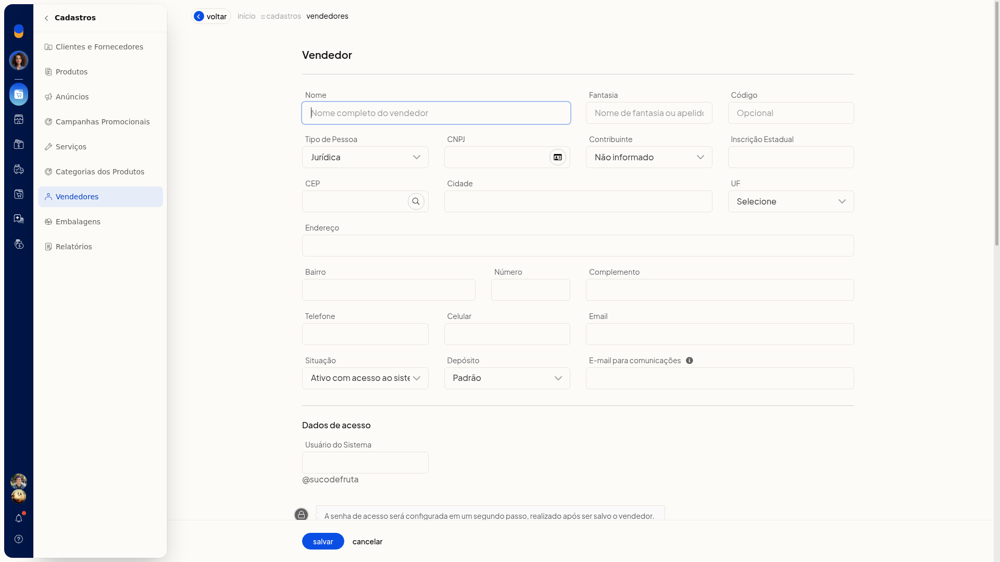
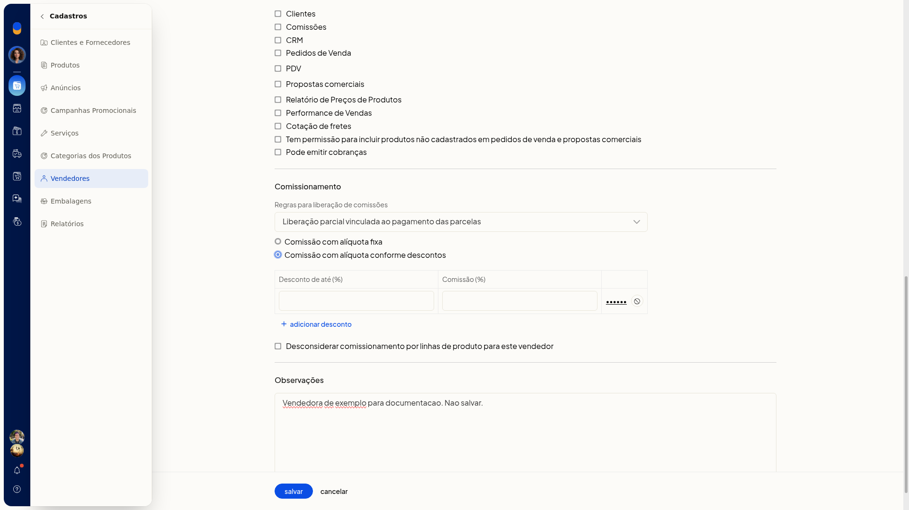

Definir a comissão do vendedor por faixas de desconto
No ERP da Olist, a comissão do vendedor pode deixar de ser uma alíquota fixa e passar a variar conforme o desconto. Você informa até qual percentual de desconto vale cada comissão e pode adicionar outra faixa.
O ajuste fica no cadastro do vendedor, em Cadastros > Vendedores.
Importante
- O padrão de Comissionamento é Comissão com alíquota fixa. Para usar faixas, selecione Comissão com alíquota conforme descontos.
Instruções
-
Acesse Cadastros > Vendedores.

-
Clique em incluir vendedor.

-
Em Comissionamento, selecione Comissão com alíquota conforme descontos.

-
Preencha Desconto de até (%) e Comissão (%). Esses campos não são obrigatórios.
-
Clique em Adicionar desconto para incluir outra faixa.
-
Clique em salvar. A senha de acesso é uma etapa seguinte ao salvamento.
Informações adicionais
- A opção Desconsiderar comissionamento por linhas de produto para este vendedor só aparece se a empresa usa linhas de produto.